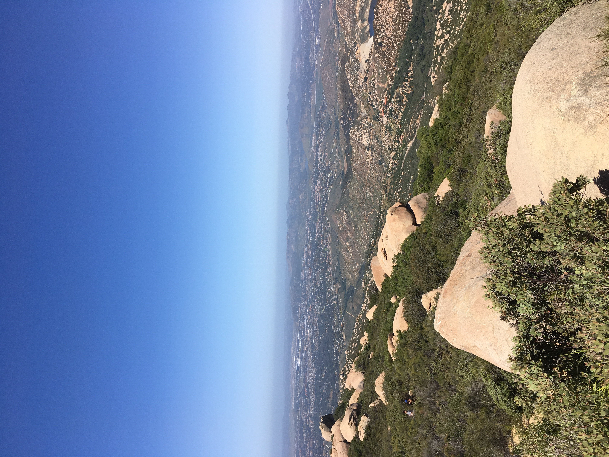

Costa Rica
I went to Costa Rica for 2 weeks last summer through my school's Spanish Club. We traveled all over the country and it was a super fun
trip as I went with my best friend and my Spanish teacher was really fun. We went zip lining, white water rafting, to a farm, the capital, and many more places.
Bahamas
During spring break of my junior year of high school, my family and gradparents went to the Bahamas and stayed at an all inclusive resort.
I went swimming with sea turtles, saw some dolphins and tropical fish, and relaxed on the beach. Overall it was a really fun trip and I would love to go back!

San Diego
Back in 2017 I went to California over Easter break with my mom to visit my friend and her family since they moved there a few years back.
We got ice cream, went shopping at an outdoor mall and saw a Youtuber while there, and saw sea lions! I really want to go back to visit in the future.

Minnesota
This past winter I went to stay in a cabin for a couple days up by the Canadian border. We stayed at a resort and I just chilled in the cabin, worked on a puzzle,
ate food, watched movies, and walked around outside. It was a fun trip, but it took so long to get there that I probably would not go back.